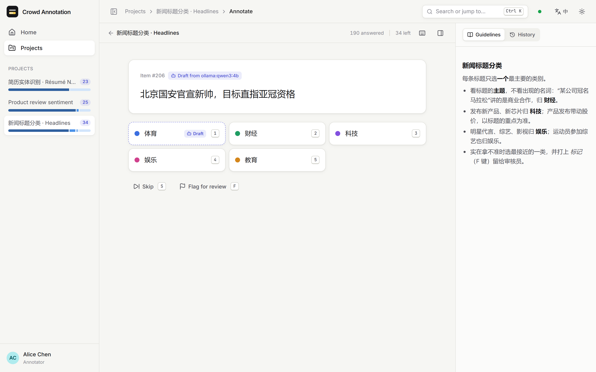
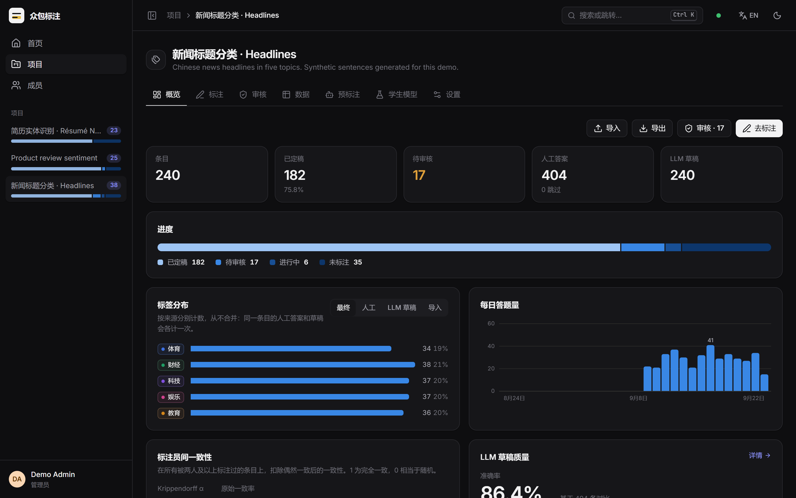
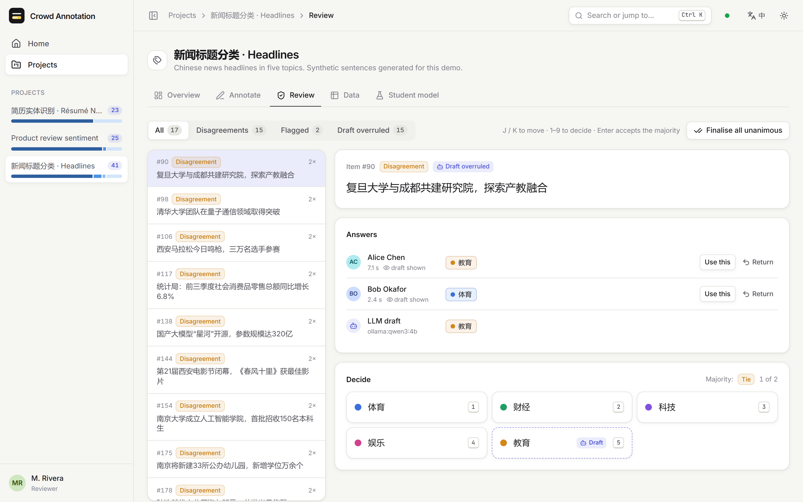
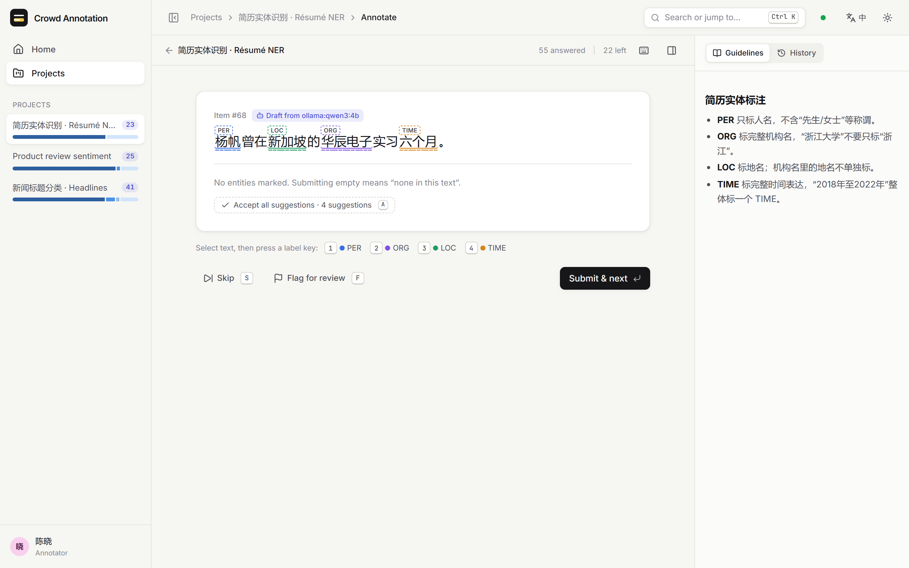
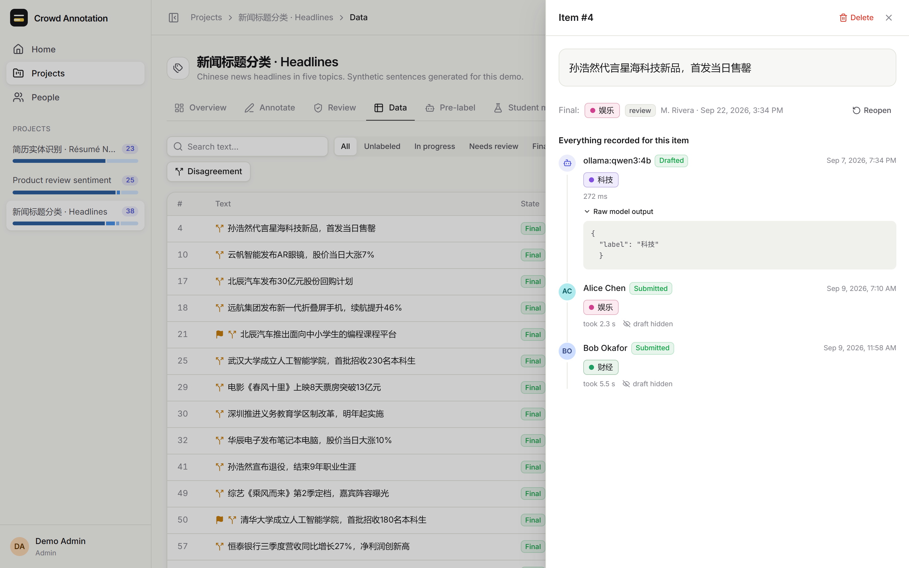
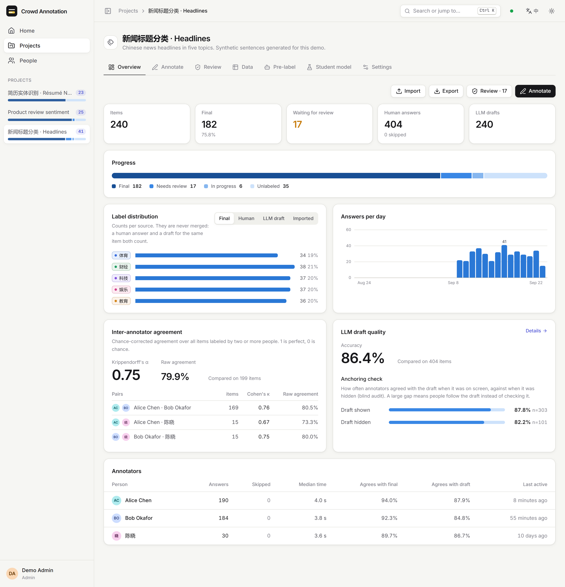
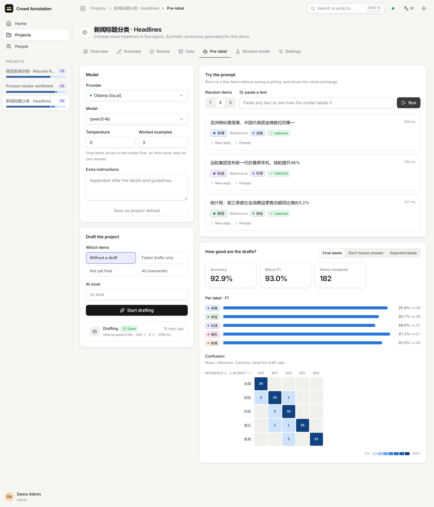
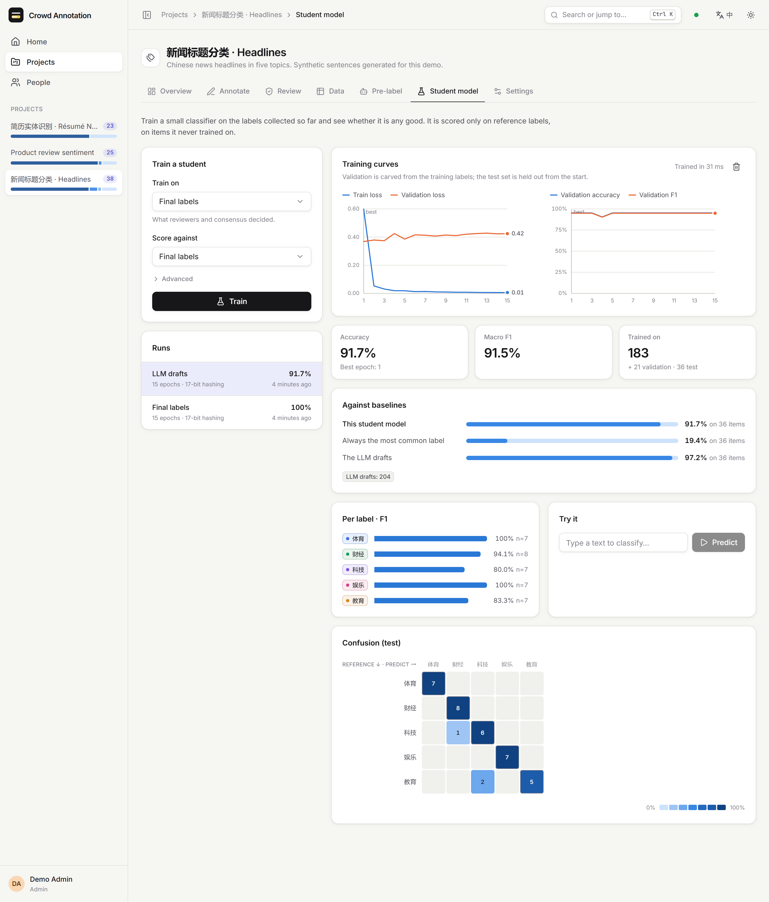
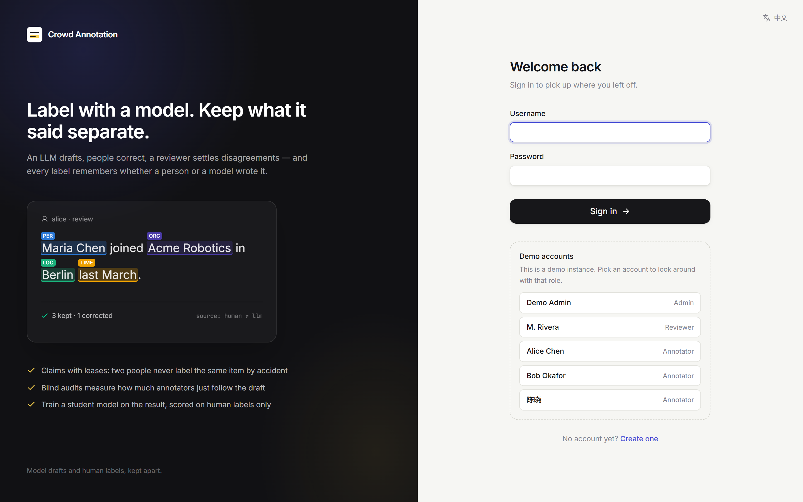

Label with a model. Keep what it said separate.
A labelling tool for the workflow where a language model drafts labels and people check them. Annotators are served one item at a time with the draft as a suggestion, a reviewer settles disagreements, and the result trains a small model that is scored on human labels only. The forms are the easy part. The hard part is keeping the record honest: for every label, whether a person or a model produced it, and whether the person checked the draft or just accepted it.
- Hono · Drizzle
- Postgres · PGlite
- React 19 · Tailwind 4
- Ollama · Claude · OpenAI-compatible
- FOR UPDATE SKIP LOCKED
- English · 中文
- 107 tests · CI


One headline to classify. The model’s draft is on the button it chose, marked as a draft, and the number keys pick a label.The same project’s overview in Chinese and the dark theme: items, final labels, the review backlog, human answers and drafts. A seeded demo instance; the switch at the top right swaps the theme here too.
None of it fails loudly. You get a plausible label and no error.
A tool like this can be wrong in a way that looks exactly like working. A model call fails and something still lands in the label column. A person clicks the suggested answer without reading the text. An accuracy figure is computed against labels the model itself wrote. Every row looks like a label.
So the design starts from one rule: model drafts, human answers and imported labels are separate sources throughout, and every statistic and every export names the source it used. Nothing merges them silently.
v1 looked fine. Its own database said otherwise.
This is v2. v1 ran for one real labelling job. Migrating its database into v2, which forced every record through v2’s checks, showed where it had been quietly recording the wrong thing.
- what v1 recordedwhat v2 does
- 01Failures became labels.A reply with no label, or a failed request, was saved as the task’s first label; a reply naming two labels counted as whichever came first in the list.A failed or unparseable call is an
errorrow that keeps the raw reply. The parser accepts exactly one allowed label, or entities it can place on the text. - 02A confidence nobody measured.Drafts the platform wrote carried 0.9 whatever the model said: 2,274 of them.Drafts store no confidence: none of the providers reports one, and v2 doesn’t invent it.
- 03Duplicate drafts.479 surplus drafts, and on 99 items they disagreed, so “the model’s label” depended on which row a query returned.Partial unique indexes allow one draft per item, one imported label per item, one answer per person per item.
- 04Offsets that counted the badges.NER offsets came from a DOM range that included the label badges drawn inside spans: 3 of 1,559 stored spans pointed at the wrong characters.Offsets come from data attributes on each character, in code points, and the server re-checks them and derives the span text itself.
- 05Saving the assignment dialog moved people’s work.It showed every assignment as items 1…N and wrote that back, so one save could move an annotator from 201–400 to 1–200 and take those items from whoever held them.Ranges are stored and shown as ranges. They limit who is served what; exclusivity comes from claims.
- 06Exports weren’t filtered.Its README promised human-only and model-only exports; the endpoint wrote every annotation of every source into one file.Every export names its label source:
final,human,llm,importor all. - 07No claims.Where items were not assigned, everyone drew from one pool, and two people could be served the same item.Items are claimed under a lease with
FOR UPDATE SKIP LOCKED.
of the 3,063 labels v1’s README said went through review one at a time were made at a human pace.
drafts carrying a confidence of 0.9 that no model had reported.
items whose duplicate drafts disagreed with each other, among 479 surplus drafts.
stored spans pointing at the wrong characters, repaired in migration.
A correction to v1’s README. It said 3,063 samples went through the review queue a sample at a time. v1 stored every non-draft label as a human annotation, including gold labels written by import scripts. Counting only those created at a human pace, fewer than 100 in the same minute for the same task, leaves 91. The other 94,121 arrived in bulk and are migrated as imported labels, not human ones. The rule and the full reconciliation.
Four sources, and nothing merges them.
Items are imported, a model drafts labels, annotators label with the draft as a suggestion, answers that disagree go to review, and final labels train a student model and export. Each step writes its own kind of row.
humanAn answer a person submitted, one per person per item, with whether the draft was shown.
llmThe model’s draft, one per item, with its raw output. A failed call is an error row, never a label.
importA label that came in with the data, one per item. Never counted as a person’s work.
finalThe decided label, kept apart again, with how it was decided: consensus, review or import.
The blind audit. A fixed share of claims hides the draft, chosen by a hash of project, item and user so it is stable. Agreement with the draft is then reported separately for shown and hidden claims. If annotators agree with the model far more often when they can see it, the review loop is measuring deference, not correctness.
Two people never get the same item by accident.
WITH candidate AS ( SELECT i.id FROM items i WHERE <eligible for this user> ORDER BY i.seq LIMIT 1 FOR UPDATE OF i SKIP LOCKED ) INSERT INTO annotations (…, status, lease_expires_at) SELECT …, 'claimed', now() + lease FROM candidate ON CONFLICT (item_id, user_id) WHERE source = 'human' DO NOTHING RETURNING id, item_id;
A fresh item is claimed in one statement. SKIP LOCKED is what makes concurrent requests pick
different items on real Postgres; a per-user advisory lock stops two browser tabs opening two claims.
Leases expire on their own. There is no sweeper: the eligibility query ignores claims whose lease is in the past. Redundancy N gives every item to N different people, and never to an N+1th.
A submit is one transaction that updates the answer, its item’s count and, when the project allows it, everyone agreed and nobody flagged it, the final label. It returns the next claim with it.
The rest of the workflow.
Keyboard first
Classification and span-level NER. Number keys for labels, S to skip, F to flag. Answers can change until the item is final.
Disagreement first
Finalise with any label, accept the majority, finalise every unanimous item at once, or return one answer to its author with a note; it comes back to them first.
Measured, per source
Krippendorff’s α and pairwise Cohen’s κ for classification, pairwise span F1 for NER, each annotator against the final labels and against the drafts.
Drafting
Ollama with grammar-constrained JSON, Claude through the official SDK, or any OpenAI-compatible server. A prompt preview runs a few items and saves nothing; an error that would repeat stops the job at the first one.
A student model
TF-IDF and logistic regression, or an averaged perceptron with constrained Viterbi for NER. The test set is drawn first, so a draft never trains a model scored on the same item.
In and out
Import CSV, TSV, JSON or JSONL with de-duplication. Every record of an item is one click away, raw model output included. Export JSONL, CSV or CoNLL.
A seeded demo instance, in both themes and both languages.


A accepts them all, or select text and press a label key.




DEMO_MODE on, the sign-in page lists the seeded accounts. Meant for public demos only.
Template-generated sentences, simulated annotators, each with a fixed accuracy and copying the draft some of
the time when it is shown, and drafts from a real local model, qwen3:4b. The numbers in these
pictures describe that simulation and nothing else; templated text is easy, which is why a student can
score 100%. npm run screenshots retakes them from a running demo instance.
What was tested here, and what wasn’t.
Tested
- 107 tests, server ones against a fresh in-memory Postgres per file: two annotators asking at once never get the same item; a failed model call is never a label; no test item ever contributes a training label.
- The v1 migration on the real v1 database: 94,469 items and 135,835 annotations in 44 s, every annotation accounted for.
- Its largest project, 47,345 items: the item list, search, statistics, and a streaming JSONL export of 47,247 rows, 6.6 MB, in under 0.6 s.
- A demo instance seeded end to end with
qwen3:4b, and the UI in Edge, in both languages and both themes.
Not tested
- The Claude provider has never been called. It is written against the official SDK; the tests use a mock.
- The OpenAI-compatible provider has not been run against a real server.
- A real Postgres server. The suite has only run on the embedded one, which serialises everything on one connection, so it cannot show
SKIP LOCKEDunder true parallel load. - Load and deployment. No load test, no container image; jobs run in-process, so it is a single-node application by design.
Node, and nothing else.
$ npm install $ npm run dev # API :4000, web :5173 # a demo instance in an empty data directory $ DATA_DIR=./data/demo npm run seed:demo # one process serving both $ npm run build && npm start # :4000 $ npm test # 107 tests
Requirements. Node 22.12 or later. The database is an embedded Postgres (PGlite) in ./data; set DATABASE_URL to use a server instead.
First run. On an empty database the first page asks for an admin account, and disappears once one exists.
Drafting. OLLAMA_MODEL for a local model, ANTHROPIC_API_KEY for Claude, or OPENAI_BASE_URL for any compatible server. The demo seed falls back to a mock model.
From v1. npm run migrate:v1 reads v1’s MongoDB without writing to it.